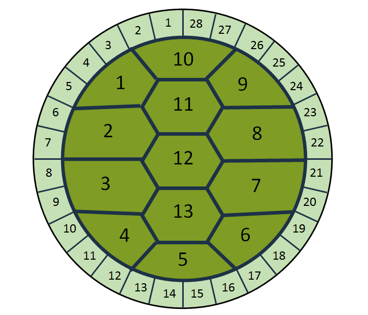
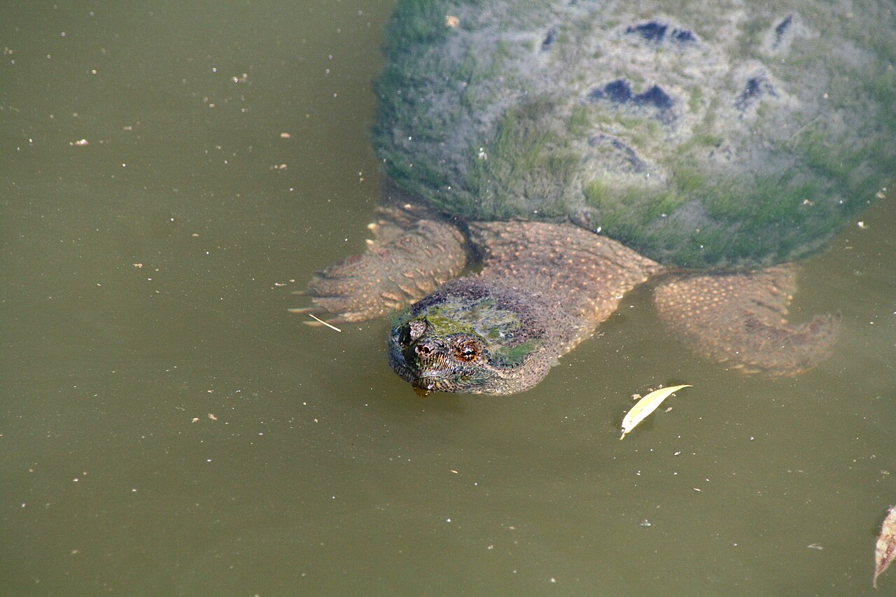
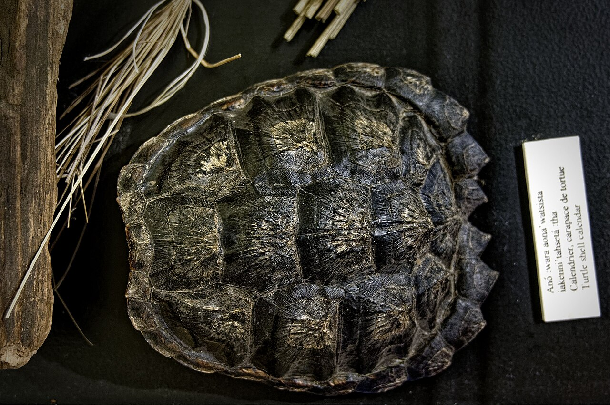

Mnido Giizis
Spirit Moon
quiet reflectionLearning the 13 Grandmother Moon teaching with local sources and astronomical context
A sourced introduction to Grandmother Moon, the seasonal meanings of the 13 Moons, the 28-day turtle-shell teaching, and the New and Old Moon.
Andrew Andrade
October 11, 2026
In the Anishinaabe teaching resources used here, Grandmother Moon helps mark time through changes in the land, water, plants, animals, weather, and community life.

The lunar calendar on a turtle’s back. Image and explanation from Ontario Parks. © King’s Printer for Ontario, 2018. Reproduced unchanged for non-commercial educational use.
Moon teachings are not identical across First Nations. Names, spellings, timing, and meanings change with language, territory, family, and community.
The sequence below comes from a Matawa Education and Care Centre resource, which identifies these as the 13 Moons of the Mississaugas of the Credit. Port Credit Secondary School stands within the traditional territory of the Mississaugas of the Credit First Nation.
The local sources use Grandmother Moon, rather than Mother Moon. A Mississaugas of the Credit First Nation notice names her Tibik Giizis Nookmissmaan and connects Grandmother Moon with water, cleansing, gratitude, and intention. See page 11 of the November 2019 Eaglepress.
This page is a starting point, not a replacement for an Elder, Knowledge Keeper, language speaker, or community teacher.

A living turtle. Photograph by Maxquijano at Toronto’s Evergreen Brick Works, 2011, CC BY-SA 3.0.

A material example. Iroquoian turtle-shell calendar display at the Droulers-Tsiionhiakwatha archaeological site. Photograph by Pierre5018, 2020, CC BY-SA 4.0. The photographed edge has 25 visible small sections, which is why this page treats the numbers as a teaching pattern rather than a universal anatomy test.
The Oneida Language and Cultural Centre explains the same 13-and-28 relationship. A Mississaugas of the Credit classroom story describes children counting 13 spots and connecting them to the 13 Moons. See page 14 of the May 2026 Eaglepress.
These compact meanings summarize the Mississaugas of the Credit sequence in the Matawa resource. Gregorian months are approximate guides, not fixed start and end dates.
Spirit Moon
quiet reflectionBear Moon
birth and reflectionSugar Moon
maple sap runsSucker Moon
fish return and sustainFlower Moon
flowers and medicines growStrawberry Moon
healing and reconciliationRaspberry Moon
gentleness and kindnessBlackberry or Thimbleberry Moon
a less frequent harvestCorn Moon
future generationsFalling Leaves Moon
Creation gives backFreezing Moon
prepare for winterLittle Spirit Moon
healing and a good pathBlue or Big Spirit Moon
purification and healingOther Anishinaabe communities may use different names, spellings, orders, or teachings because the land and community are different.
The diagrams above are plain teaching graphics. They do not imitate a living artist’s style. For art that carries story, material, and community voice, visit the artists’ official presentations.
Heather Shillinglaw, a member of Cold Lake First Nation, created 13 quilted, beaded, and painted Moon story images. She credits Elders Lynn Lush of Sandy Bay First Nation and Shirley Norris-Shillinglaw of Cold Lake First Nations.
Leilani Shaw, a Kanien’kehá:ka and Northern Paiute artist and Turtle Clan member, brings the turtle, Moon cycle, Skywoman, plants, and other teachings into one digital artwork.
Their images remain on the official gallery and museum pages because no open-reuse licence was stated.
The thin waning crescent shortly before New Moon. This is an informal sky-watching name, not one of the 13 Grandmother Moon names.
An astronomical phase when the lit side faces mostly away from Earth. The visible crescent grows afterward.
See NASA’s Moon phases guide for the complete astronomical sequence.
The turtle-shell teaching carries relationship, memory, and seasonal meaning. Astronomical measurement describes orbital timing. NASA gives about 27.3 days for one orbit around Earth and 29.5 days from one New Moon to the next.